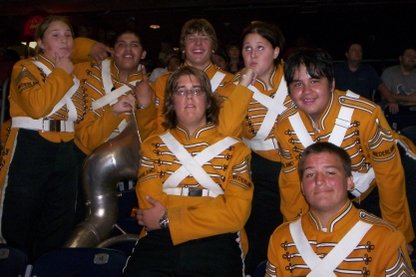
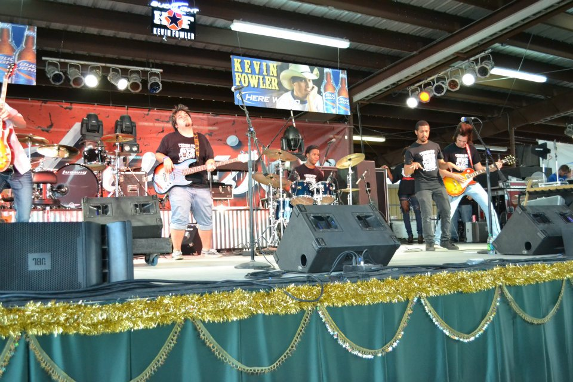
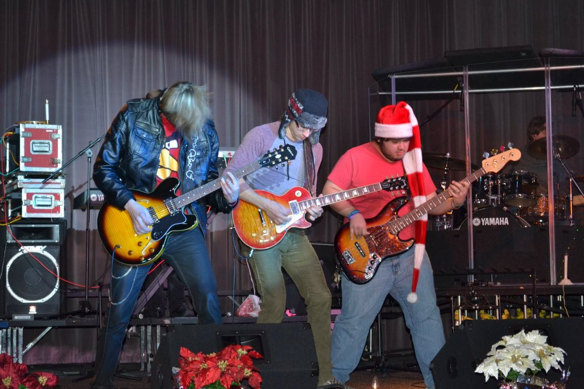
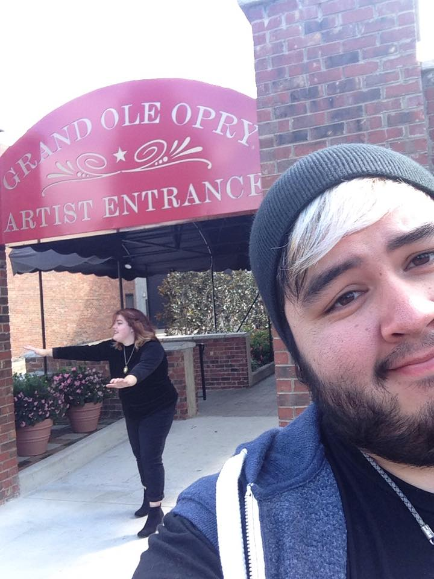
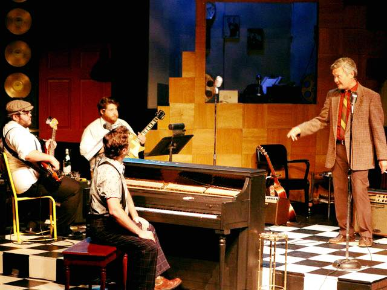

My Musical Journey
I began playing music at a very young age. When I was 7, my aunt taught me the note names on the piano and I have been inspired by music ever since. Music didn't become a focus in my life until I got to middle school and was told that I could skip athletics and sports if I joined the marching band. I spent the next six years learning every instrument in the marching band I could. I found I had a natural affinity for the tuba and the harmonic qualities that low end instruments used to create a foundation and support for the band.
I began to want to move out of the classical space and venture into more contemporary music and rock music. My parents bought me my first electric bass guitar for my 13th birthday. I began taking lessons at a local after-school music program and was placed into a band with other students in the program. We created the first band the program had ever seen and began to tour around local venues to promote the program and encourage other kids to learn to play instruments. I later went on to be a teacher for a few years after graduating high school.
After graduating high school, I went on to join a young Associate's Degree program at Lamar State College Port Arthur. A lot of the local area's best musicians came to this program for a more formal training in the commercial music industry. The program specialized in training for session musicians and audio engineering with an emphasis on putting on live performances and touring. I had the wonderful opportunity to tour and play all around Texas, even having the opportunity to open for Texas country star Kevin Fowler. We had lots of fun and even put on holiday themed concerts every year.
 I graduated in 2012 with my Associate's Degree. I already had a somewhat successful music career in small town Texas, but I decided I wanted to finish my Bachelor's and continue my music education. In 2013, I moved to Nashville after being accepted into the Belmont School of Music. It was magical being surrounded by so many people with similar hopes and dreams as me, a true creative utopia. My friends and I began to record cover songs and post them to YouTube.
I had many wonderful opportunities while in school at Belmont. I got to perform with some of the greatest musicians, be mentored by masters of their respective instruments, and even record music in some of the most famous venues of all time. I even had the opportunity to perform and record at the Grand Ole Opry.
Even though I had so many wonderful experiences performing with and supporting other artists, nothing brought me more joy than working in the theater industry. I began to carve out my own spot in the music industry and I fell in love with musical theater. I began working in local theaters all over the middle Tennessee area, finding a main home at the Roxy Regional Theater in Clarksville, TN. I even became the first electric bass student at Belmont to perform a senior recital with a musical theater theme.
I continued to work in the theater industry after graduating college and eventually was getting ready to pursue it as a full time career. Unfortunately, those plans fell short as the start of the COVID-19 pandemic shut down all theaters across America for over 18 months, including Broadway in NYC. I will always have a love for music and theater, but have since turned my professional ambitions towards my other passion: technology.